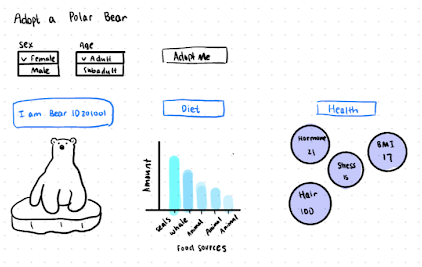

A Frigid Fate: The Decline of Polar Bears in a Warming World
Did you know there is a new species in the Arctic?
PIZZLY BEARS!
What are pizzly bears?
Pizzly bears are a hybrid between polar bears and their southern relatives, the grizzly
bears.
How did they come to exist?

Climate change is pushing polar bears and grizzly bears closer together. As the Earth
warms,
grizzly bears are migrating up towards the Southern Beaufort Sea and polar bears are
migrating south.
This interspecies blending, while a natural consequence of overlapping territories, is a
testament to
the dynamic and often unpredictable ways in which life on Earth responds to the pressures of
environmental change.
The rise of the pizzly bear symbolizes a world in transition, where the lines drawn by
nature are being redrawn by humans.
While a phenomenon like the pizzly bear may seem like a novelty, the realities of climate
change are far from it,
especially for the polar bears.
A Closer Look into Climate Change
As CO2 emissions and the average temperature of the Earth increase, we see a stark decrease in the mass of Arctic sea ice.
Subregions

Let's take a closer look into how the melting of the Arctic sea ice is
affecting polar bears in each of the 18 different subregions.
Polar Bear Diet Consumption
As sea ice melts, polar bears must adapt to changes in their environment.
Specifically, we can see how their diet has changed over time.
Analysis
Health Visualization
Health is an important indicator of the well-being of polar bears and one that has been affected
drastically in the past decade. Let's take a look at how the health of polar bears has changed
over
time and examine indicators such as reproductive health, stress, and BMI.
Adopt a Bear
Dive deeper and learn more about a specific polar bear by adopting one!

Thank you!
About Us
Huiwen Chen
Jessica Li
Kathy Zhong